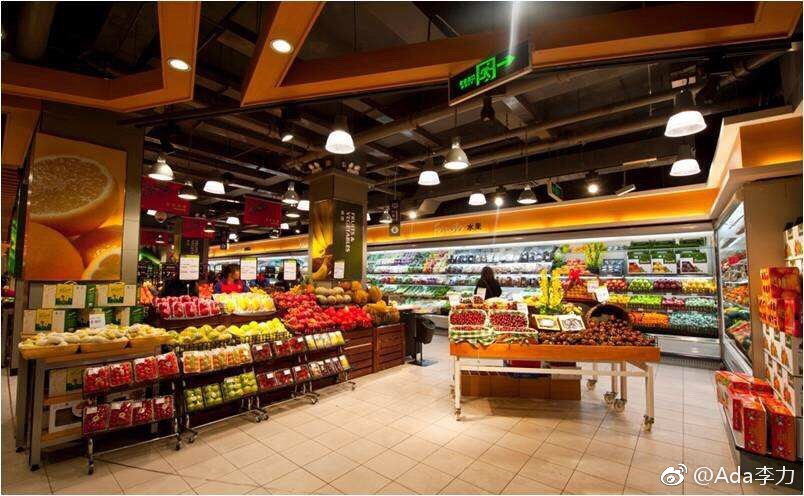

今天逛了两个以“新零售”为卖点的线下店：永辉精品超市 Bravo YH，盒马生鲜。
Bravo YH是由以前永辉超市改建而来，逛了后，失望较多。购物环境并没有提升太多，但商品数量减少，价格贵了许多。尤其是生活用品区，产品还是带有集贸市场的特点。其实，品牌有这么一说，低端品牌想升级到高端品牌非常难，通常需要全新人马，全新做法。
盒马鲜生结账必须用App，把老年人屏蔽出去了。食品可以现场加工，现场食用，看到不少人围桌吃大螃蟹，可惜我去时已卖完了，猜想是效仿某意大利超市+餐厅的做法。线下店中，吃的粘性最大。我可以几个月不逛超市，东西都可以网上下单送到家。但嘴里淡出鸟时，就很有动力找馆子打打牙祭的。
Bravo YH是由以前永辉超市改建而来，逛了后，失望较多。购物环境并没有提升太多，但商品数量减少，价格贵了许多。尤其是生活用品区，产品还是带有集贸市场的特点。其实，品牌有这么一说，低端品牌想升级到高端品牌非常难，通常需要全新人马，全新做法。
盒马鲜生结账必须用App，把老年人屏蔽出去了。食品可以现场加工，现场食用，看到不少人围桌吃大螃蟹，可惜我去时已卖完了，猜想是效仿某意大利超市+餐厅的做法。线下店中，吃的粘性最大。我可以几个月不逛超市，东西都可以网上下单送到家。但嘴里淡出鸟时，就很有动力找馆子打打牙祭的。
- 